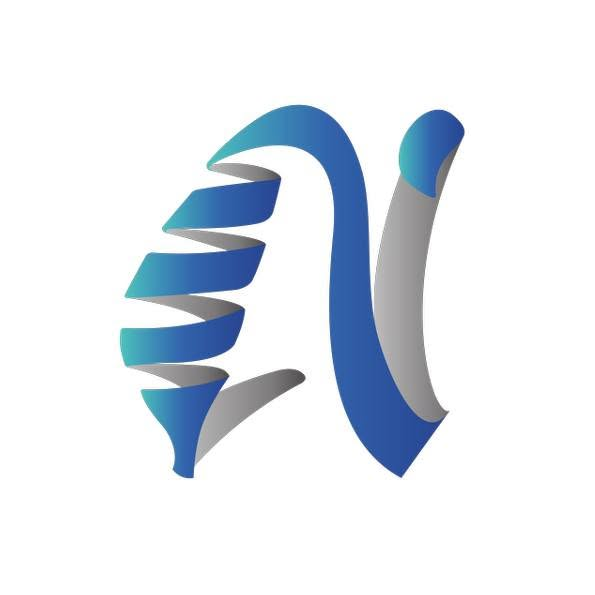
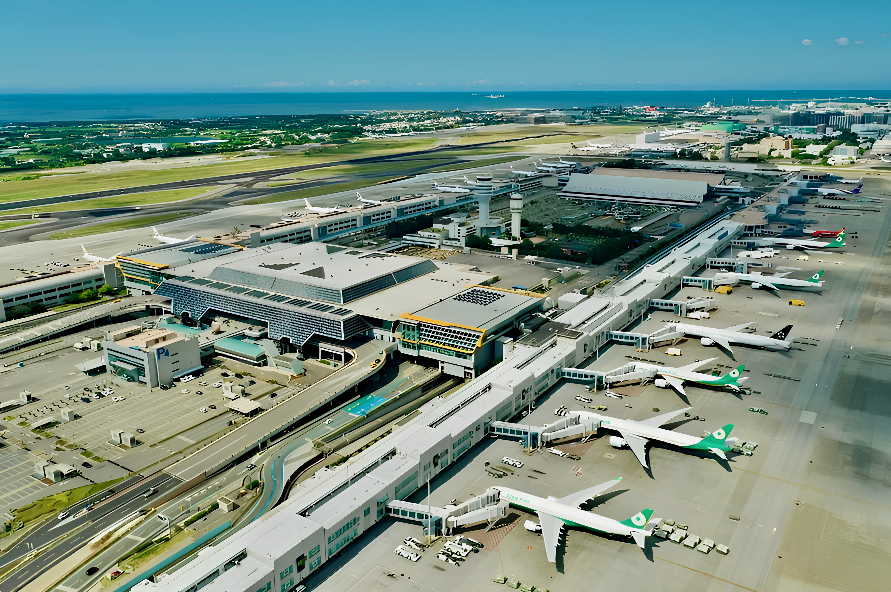
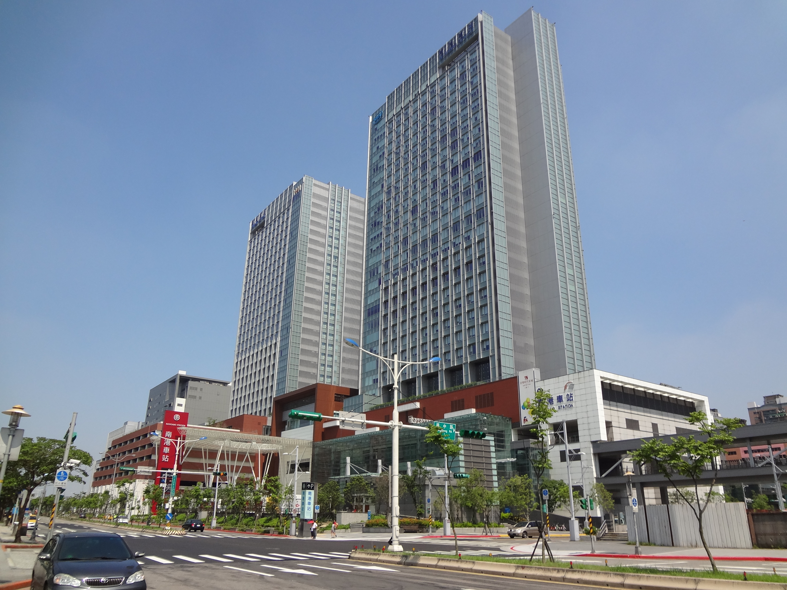
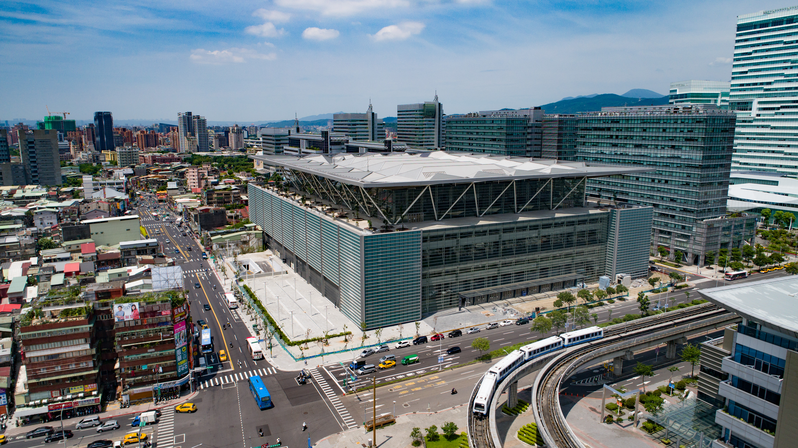
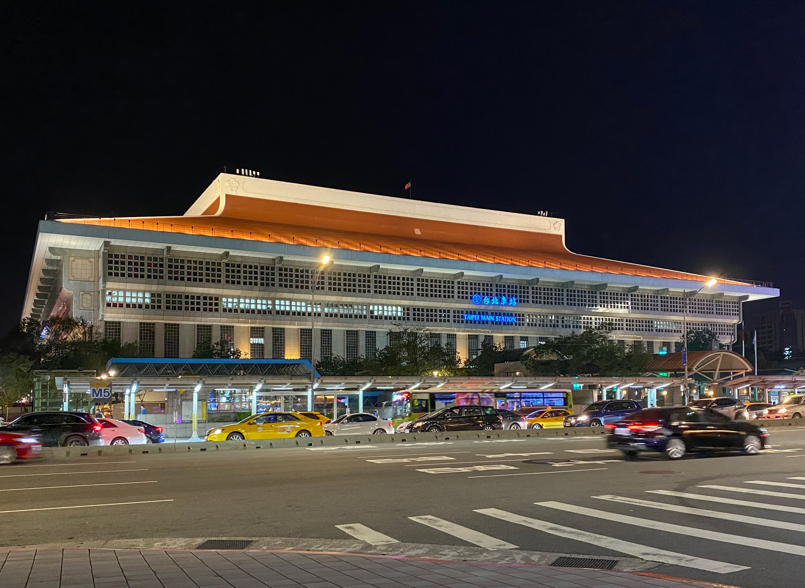

Invited Speaker
Prof. Jean-Yves Marion
Université de Lorraine (LORIA)
Academia Sinica, Taipei, Taiwan
Program
Day 1 and Day 2 speakers.
Invited Speaker
Université de Lorraine (LORIA)

Invited Speaker
National Institute of Cyber Security (NICS)

Invited Speaker
National Taiwan University of Science and Technology (NTUST)

Invited Speaker
National Chengchi University

Invited Speaker
National Taiwan University of Science and Technology (NTUST)

Invited Speaker
National Taiwan University of Science and Technology (NTUST)
Invited Speaker
Affiliation TBD
Invited Speaker
Affiliation TBD
Discussion / Panel
Participants TBD
Partners

NSTC
Université de Lorraine
TACC

AICoE

NTUST

Academia Sinica
Submissions
We welcome Student Posters and Research Group Posters.
View Call for Posters →Practical Information
Useful information for participants will be updated as the workshop details are finalized.
Venue


Venue
The workshop is planned to take place at Academia Sinica in Nangang, Taipei. Building name, room number, and map link will be added after confirmation.
Transportation




Accommodation

Located inside Academia Sinica, within walking distance of the workshop venue. Reservation is required.
Official website →Located directly above Nangang HSR / MRT Station, with a direct connection to Academia Sinica.
Official website →Located near Nangang Station, a short ride from Academia Sinica.
Official website →Located near "Taipei Nangang Exhibition Center", a short ride from Academia Sinica.
Official website →Located near "Taipei Nangang Exhibition Center", a short ride from Academia Sinica.
Official website →Explore Taipei


A city view blending Taipei 101 with the surrounding mountains, capturing the scale of the capital.
A landmark monument and plaza in central Taipei, popular for its architecture and changing-of-the-guard ceremony.
A classical Chinese-style performance venue facing the National Concert Hall across Liberty Square.
A modern multi-purpose arena hosting sports events and concerts in the Songshan district.
The city's central transport hub, connecting rail, metro, and high-speed rail lines.
A landmark red-and-gold hotel on Yuanshan overlooking the Keelung River and city skyline.
A hillside street lined with tea houses and lantern-lit alleys, known for its views over the coast.
Terraced streets climbing the hillside, offering panoramic views of the surrounding mountains and sea.
A riverside district known for sunset views, an old street, and waterfront cafés.
A hot spring district with thermal valley scenery and mountain views.
One of Taipei’s oldest night markets, known for local street food and a lively evening atmosphere.
A historic temple at the entrance to Raohe Street Night Market, dedicated to the sea goddess Mazu.